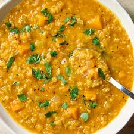

Red Lentil Soup
Description
Lentil soup is a soup with lentils as its main ingredient; includes meat, and may use brown, red, yellow, green or black lentils, with or without the husk.
Dehulled yellow and red lentils disintegrate in cooking, making a thick soup.
It is a staple food throughout Europe, Latin America and the Middle East.

Ingredients
- 2 tablespoons olive oil
- 1/2 onion, diced
- 1 clove garlic, minced
- 1/4 cup diced tomatoes, drained
- 5 cups chicken stock
- 1/2 cup red lentils
- 1/4 cup fine bulgur wheat
- 1/4 cup rice
- 2 tablespoons tomato paste
- 1 tablespoon dried mint
- 1 teaspoon paprika
- Salt and ground black pepper
Directions
- Heat oil in a large pot over medium heat. Add onion and sauté until beginning to soften, about 2 minutes. Stir in garlic and cook for 2 minutes. Add diced tomatoes and cook for 10 minutes.
- Stir in chicken stock, lentils, bulgur, rice, tomato paste, mint, paprika, cayenne pepper, salt, and black pepper; bring to a boil. Reduce heat to medium-low and simmer until lentils and rice are tender, about 30 minutes.
- Puree soup with an immersion blender until smooth.